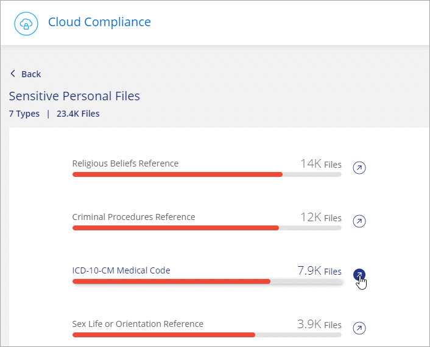
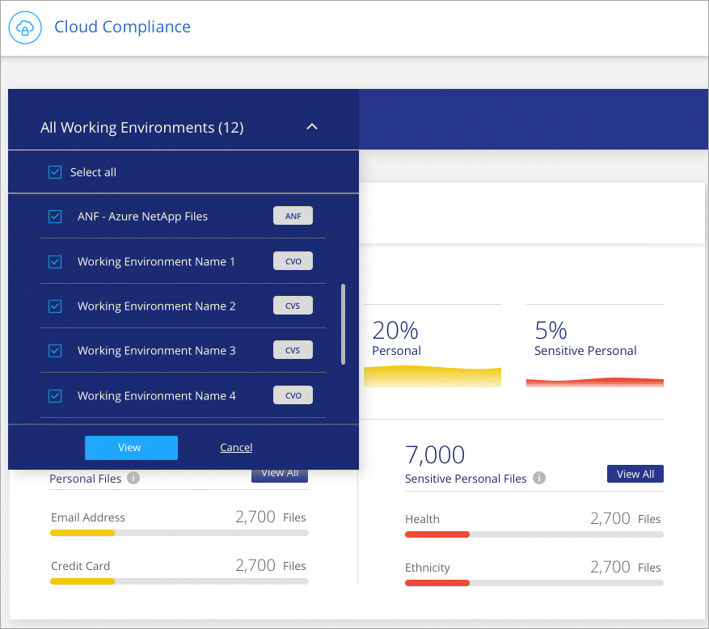

プライベートデータの可視性と制御の獲得 GitHubで編集 ドキュメントの変更をリクエストする
寄稿者
組織内の個人データおよび機密個人データに関する詳細を表示して、個人データを管理します。また、クラウドコンプライアンスがデータで見つけたカテゴリとファイルタイプを確認することで、可視性を得ることができます。
個人データ
Cloud Complianceは、データ内の特定の単語、文字列、パターン（Regex）を自動的に識別します。たとえば、個人識別情報（PII）、クレジットカード番号、社会保障番号、銀行口座番号など。 完全なリストを参照してください 。
一部のタイプの個人データについては、クラウドコンプライアンスは近接性検証を使用して 、検出結果を検証します。検証は、見つかった個人データの近くで1つ以上の事前定義されたキーワードを探すことによって行われます。たとえば、クラウドコンプライアンスは、 SSNや社会保障などの近接語が表示された場合、米国社会保障番号（SSN）をSSNとして識別します。 以下のリストは、クラウドコンプライアンスが近接検証を使用する場合を示しています。
個人データを含むファイルの表示
Cloud Managerの上部で、 コンプライアンスをクリックします。
上位2つのファイルタイプのいずれかの詳細をメイン画面から直接ダウンロードするか、[ すべて表示 ]をクリックして、見つかった個人データタイプのリストをダウンロードします。

個人データの種類
| タイプ | 識別子 | 近接検証？ |
|---|---|---|
全般 | 電子メールアドレス | 番号 |
クレジットカード番号 | 番号 | |
IBAN番号（国際銀行口座番号） | 番号 | |
IPアドレス | はい | |
国民識別番号 | ベルギーID（Numero National） | はい |
ブルガリアID（統一市民番号） | はい | |
カリフォルニア州運転免許証 | はい | |
キプロス納税者番号（TIC） | はい | |
デンマークの納税者番号（CPR） | はい | |
エストニアID（Isikukood） | はい | |
フィンランドID（henkilötunnus） | はい | |
フランスの納税者番号（SPI） | はい | |
ドイツの納税者番号（Steuerliche Identifikationsnummer） | はい | |
ハンガリーの納税者番号（Adóazonosítójel） | はい | |
アイルランドID（PPS） | はい | |
イスラエルID | はい | |
イタリア語ID（コディスフィスケール） | はい | |
ラトビアの納税者番号 | はい | |
リトアニアID（Asmens kodas） | はい | |
ルクセンブルクID | はい | |
マルタID | はい | |
オランダID（BSN） | はい | |
ポーランドの納税者番号 | はい | |
ポルトガルの納税者番号（NIF） | はい | |
ルーマニアの納税者番号 | はい | |
スロバキアの納税者番号 | はい | |
スロベニアの納税者番号 | はい | |
南アフリカID | はい | |
スペインの納税者番号 | はい | |
スウェーデンの納税者番号 | はい | |
英国国民保険番号（NINO） | はい |
機密性の高い個人データ
クラウドコンプライアンスは、GDPRの記事9および10などのプライバシー規制で定義されているように、特別な種類の機密個人情報を自動的に識別します。たとえば、人の健康、民族、性的指向に関する情報。 完全なリストを参照してください 。
クラウドコンプライアンスは、人工知能（AI）、自然言語処理（NLP）、機械学習（ML）、コグニティブコンピューティング（CC）を使用して、スキャンするコンテンツの意味を理解し、エンティティを抽出し、それに応じて分類します。
たとえば、GDPRの機密データカテゴリの1つは民族的起源です。 NLPの機能により、クラウドコンプライアンスは「George is Mexican」（GDPRの第9条で指定されている機密データを示す）と「George is Mexican foodを食べている」という文の違いを区別できます。
| 機密の個人データをスキャンする場合、英語のみがサポートされます。他の言語のサポートは後で追加されます。 |
機密の個人データを含むファイルの表示
Cloud Managerの上部で、 コンプライアンスをクリックします。
上位2つのファイルタイプのいずれかの詳細をメイン画面から直接ダウンロードするか、[ すべて表示 ]をクリックして、見つかった機密性の高い個人データタイプのリストをダウンロードします。

機密個人データの種類
クラウドコンプライアンスがファイルで見つけることができる個人データには、次のものが含まれます。
- 刑事訴訟リファレンス
自然人の刑事上の有罪判決および犯罪に関するデータ。
- 人種参照
自然人の人種的または民族的起源に関するデータ。
- 健康リファレンス
自然人の健康に関するデータ。
- 哲学的信念のリファレンス
自然人の哲学的信念に関するデータ。
- 宗教的信念のリファレンス
自然人の宗教的信念に関するデータ。
- 性生活またはオリエンテーションの参照
自然人の性生活または性的指向に関するデータ。
カテゴリー
クラウドコンプライアンスは、スキャンしたデータを取得し、さまざまなタイプのカテゴリに分割します。カテゴリは、各ファイルのコンテンツとメタデータのAI分析に基づくトピックです。 カテゴリのリストを参照してください 。
カテゴリは、持っている情報の種類を示すことで、データで何が起こっているのかを理解するのに役立ちます。たとえば、履歴書や従業員契約などのカテゴリに機密データを含めることができます。 CSVレポートをダウンロードすると、従業員の契約が安全でない場所に保存されていることがあります。その後、その問題を修正できます。
| カテゴリでは英語のみがサポートされています。他の言語のサポートは後で追加されます。 |
カテゴリ別にファイルを表示する
Cloud Managerの上部で、 コンプライアンスをクリックします。
上位4つのファイルタイプのいずれかの詳細をメイン画面から直接ダウンロードするか、[ すべて表示 ]をクリックして、任意のカテゴリのリストをダウンロードします。

カテゴリーの種類
クラウドコンプライアンスは、データを次のように分類します。
- ファイナンス
バランスシート
発注書
請求書
四半期報告書
- 人事
身元調査
報酬プラン
従業員契約
従業員レビュー
健康
履歴書
- 法的
NDA
ベンダーと顧客の契約
- マーケティング
キャンペーン
カンファレンス
- 操作
監査レポート
- 売上高
受注
- サービス
RFI
RFP
トレーニング
- サポート
苦情とチケット
- その他
アプリケーションデータ
アーカイブファイル
オーディオ
CADファイル
コード
データベースとインデックスファイル
実行可能ファイル
画像
ログ
ファイルタイプ
クラウドコンプライアンスは、スキャンしたデータを取得し、ファイルタイプ別に分類します。 Cloud Complianceは、スキャンで見つかったすべてのファイルタイプを表示できます。
ファイルの種類を確認すると、特定のファイルの種類が正しく保存されていないことがわかるため、機密データの制御に役立ちます。たとえば、組織に関する非常に機密性の高い情報を含むCADファイルを保存している場合があります。セキュリティで保護されていない場合は、アクセス許可を制限するか、ファイルを別の場所に移動することにより、機密データを制御できます。
ファイルの種類を表示する
Cloud Managerの上部で、 コンプライアンスをクリックします。
上位4つのファイルタイプのいずれかの詳細をメイン画面から直接ダウンロードするか、[ すべて表示 ]をクリックして、いずれかのファイルタイプのリストをダウンロードします。

ダッシュボードでのデータのフィルタリング
クラウドコンプライアンスダッシュボードのコンテンツをフィルタリングして、特定の作業環境のコンプライアンスデータを表示します。
ダッシュボードをフィルタリングすると、クラウドコンプライアンスは、選択した作業環境のみにコンプライアンスデータとレポートをスコープします。
フィルターのドロップダウンをクリックし、データを表示する作業環境を選択して、[ 表示 ]をクリックします 。

見つかった情報の正確さ
NetAppは、クラウドコンプライアンスが識別する個人データおよび機密個人データの100％の正確性を保証できません。データを確認して、常に情報を検証する必要があります。
私たちのテストに基づいて、以下の表は、クラウドコンプライアンスが検出した情報の精度を示しています。 精度でそれを分解し、 思い出します：
- 精度
Cloud Complianceが検出する確率は正しく識別されています。たとえば、個人データの90％の正解率は、個人情報を含むと識別された10個のファイルのうち9個が実際に個人情報を含むことを意味します。 10個のファイルのうち1個が誤検知です。
- 想起
クラウドコンプライアンスが何をすべきかを見つける確率。たとえば、個人データの70％のリコール率は、クラウドコンプライアンスが組織内の個人情報を実際に含む10個のファイルのうち7個を識別できることを意味します。クラウドコンプライアンスではデータの30％が失われ、ダッシュボードには表示されません。
クラウドコンプライアンスは管理された可用性のリリースであり、結果の精度を常に改善しています。これらの改善は、今後のクラウドコンプライアンスリリースで自動的に利用可能になります。
| タイプ | 精度 | 想起 |
|---|---|---|
個人データ-一般 | 90％〜95％ | 60％〜80％ |
個人データ-国識別子 | 30％-60％ | 40％-60％ |
機密性の高い個人データ | 80％-95％ | 20％-30％ |
カテゴリー | 90％〜97％ | 60％〜80％ |
各ファイルリストレポートに含まれるもの（CSVファイル）
ダッシュボードを使用すると、識別されたファイルの詳細を含むファイルリスト（CSV形式）をダウンロードできます。 10,000件を超える結果がある場合、上位10,000件のみがリストに表示されます（詳細のサポートは後で追加されます）。
各ファイルリストには、次の情報が含まれています。
ファイル名
ロケーションタイプ
ロケーション
ファイルパス
ファイルタイプ
カテゴリー
個人情報
機密性の高い個人情報
削除検出日
削除検出日は、ファイルが削除または移動された日付を識別します。これにより、機密ファイルがいつ移動されたかを識別できます。削除されたファイルは、ダッシュボードに表示されるファイル番号カウントの一部ではありません。ファイルはCSVレポートにのみ表示されます。